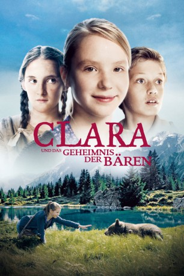
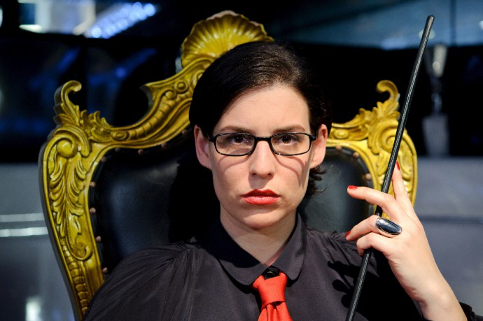

#8736 Clara und das Geheimnis der Bären
 
 IMDB-Wertung: 6.1 / 10
IMDB-Wertung: 6.1 / 10  Metascore: 0
Metascore: 0 
Die 13-jährige Clara zieht mit ihrer Mutter zu ihrem Stiefvater in ein kleines Bergdorf in den Schweizer Alpen. Clara liebt die Natur und Streifzüge durch die Berge. Sie ist sehr naturverbunden und daher stört es sie wenig, dass die Dorfbewohner mit der Familie nichts zu tun haben wollen. Auch in der Schule hat das sensible Mädchen keine Freunde. Nur Thomas, ebenfalls ein Neuer aus der Stadt , steht zu ihr. Als Clara eines Tages auf einer Waldwiese einen kleinen Bären entdeckt, überschlagen sich plötzlich die Ereignisse: Kann es ein Junges der Bärenmutter Zelda sein, die vor ein paar Jahren von Wilderern geschossen wurde? Warum verbreitet sich das Gerücht über die Rückkehr der Bären im Dorf wie ein Lauffeuer? Clara ahnt, dass sie einem riesigen Geheimnis auf der Spur ist, das weit in die Vergangenheit reicht. Zusammen mit Thomas versucht Clara die mysteriöse Dorfgeschichte zu ergründen und gerät dabei immer tiefer in ein rätselhaftes Abenteuer...
Jahr: 2013
Dauer: 93 Minuten
FSK: 6
Land: Schweiz Studio: Farbfilm-VerleihTonspuren: DTS - ,
Untertitel:
Auflösung: 1080p (1920x816) Größe: 5273 MB
Genre: Familie
Regisseur: Tobias Ineichen
Drehbuch: Tobias Ineichen
Soundtrack: Fabian Römer
Darsteller:
-  Elena Uhlig als Nina
 Roeland Wiesnekker als Jon
Roeland Wiesnekker als Jon- Ricarda Zimmerer als Clara
- Damian Hardung als Thomas
- Rifka Fehr als Susanna - 1808
- Monica Gubser als Frau Degonda
- Peter Jecklin als Caduff
- Herbert Leiser als Simon
- Markus Merz als Vater Susanna - 1808
- Annigna Seiler als Mutter Susanna - 1808
- Hafner Marie Anne als Frau im Feuer
- Agnes Derory als Hebamme 1808
- Adrian Furrer als Inspektor
- Christoph Gaugler als Gastvater
- Margot Gödrös als Nana
- Nina Hesse Bernhard als Lehrerin
- Fischer Roman als Polizist 2
- Nikolaus Schmid als Wildhüter
- Henrik Zimmermann als Polizist 1
Datei: X:\2013(A-F)\Clara und das Geheimnis der Bären (2013, FSK6, 1920x816).mkv seit 26.04.2018
Festplatte: HD 2012(N-Z)-2013(A-H)
 Es gibt insgesamt 127 Filme in der Gruppe '2013(A-F)'
Es gibt insgesamt 127 Filme in der Gruppe '2013(A-F)'